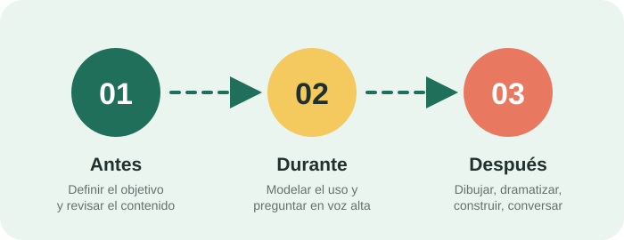

En el aula de educación inicial, la pregunta por la tecnología casi nunca es si usarla o no. Es para qué. Un recurso digital puede abrir una conversación, mostrar lo que no cabe en el salón o registrar lo que los niños construyeron; también puede ocupar veinte minutos sin dejar rastro. La diferencia no está en el dispositivo, sino en la decisión pedagógica que lo rodea.
El criterio: ¿sustituye o amplía?
Antes de incorporar cualquier recurso digital conviene hacerse una pregunta sencilla: ¿esto sustituye una experiencia que los niños podrían vivir directamente, o amplía algo que de otro modo sería inaccesible? Mostrar un video de una semilla germinando mientras hay semillas disponibles en el aula sustituye. Mostrar en cámara rápida lo que tardaría tres semanas en ocurrir amplía.
El mismo criterio sirve para decidir cuándo apagar: si la pantalla ya cumplió su función y la actividad puede continuar sin ella, continúa sin ella.

Antes, durante y después
Antes
Definir el objetivo de aprendizaje, revisar el contenido completo antes de proyectarlo, comprobar su pertinencia para la edad y preparar una actividad fuera de pantalla que lo complemente. Si no es posible nombrar qué aprenderán, todavía no es el momento de usarlo.
Durante
Modelar el uso, realizar preguntas abiertas e invitar a describir, comparar y relacionar la experiencia digital con el entorno. Pausar el video para preguntar qué creen que pasará después convierte el consumo en pensamiento.
Después
Proponer dibujar, dramatizar, construir, conversar o experimentar. Lo digital se convierte en un punto de partida y no en el cierre de la actividad: el aprendizaje se consolida cuando vuelve al cuerpo y al juego.
Una advertencia sobre los grupos grandes
En salas numerosas, la pantalla tiene un atractivo evidente: ordena, calma y concentra la atención de todos a la vez. Conviene reconocer esa tentación y nombrarla, porque en esos casos el recurso ya no responde a un objetivo pedagógico sino a una necesidad de gestión del grupo. Hacerlo de vez en cuando es comprensible; convertirlo en rutina transforma la herramienta en un sustituto del trabajo docente.
La huella digital del aula
El salón también produce huella digital. Fotografías de actividades, videos de presentaciones y registros compartidos en grupos de mensajería contienen datos de niños que no pueden consentir su publicación. Antes de compartir, conviene revisar la autorización de las familias, evitar nombres y uniformes identificables, y preguntarse si el envío cumple una función pedagógica o solo documenta el esfuerzo del adulto.
Preguntas para la planificación
💭 ¿Qué objetivo de aprendizaje justifica este recurso?
💭 ¿Los niños podrían vivir esta experiencia sin pantalla?
💭 ¿Qué actividad concreta sigue después de apagarla?
💭 ¿Revisé el contenido completo, incluida la publicidad?
💭 ¿Qué registro voy a compartir y quién podrá verlo?
Para profundizar
Las referencias utilizadas en esta entrada están citadas en formato APA en la página de recursos.
Ver recursos y bibliografía →